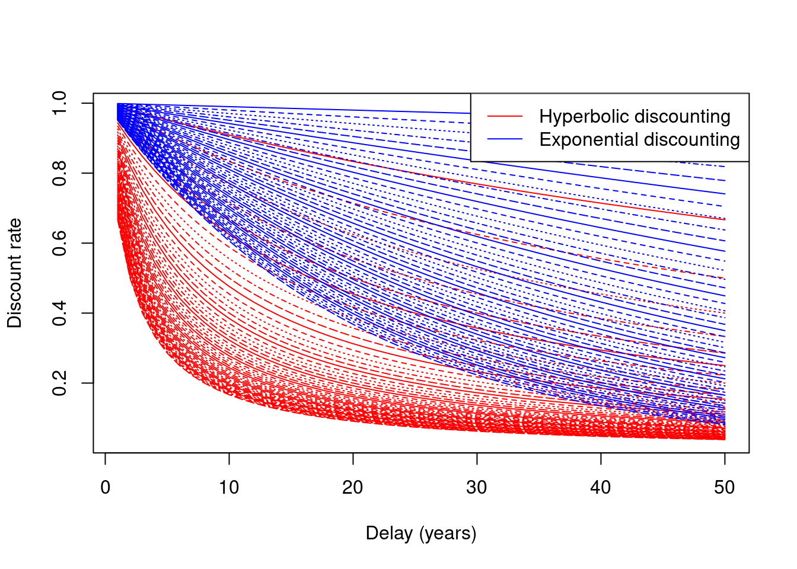

7 跨期时间偏好与时间的跳变特征
昔我往矣，杨柳依依。今我来思，雨雪霏霏。一个保险交易员有其独特于大众的时间偏好， 这种偏好称之为跨期交易偏好，他在过往与未来中穿梭，消解心中即时满足的渴，换之以绵密恒长的幸福心流。
我们因为生物之本能赋予当下的满足以极大的权重，在知觉上，在记忆中。 会计学和心理学的交叉领域中有个重要的概念叫“延迟折扣或者双曲线折扣(Hyperbolic Discounting)”， 它是指在有限的时间压力下，人们相比起未来的奖励给予当下的即时的奖励更高的优先级。 人类在进化中形成的双曲线折扣模型是一种变加速模型，遥远未来的贴现率在一开始的一小段以极大的加速度 衰减，越到后来加速度越小。相比而言，自然界中森林与鱼塘资源的衰减速度则更符合指数折扣模型(Exponential Discounting)。

任何非线性衍生品，都与时间相关。时间尤其是金融市场中的时间如流水，时而平缓，时而湍急。 它绝不是匀速运动，而是变加速运动，拥有极强的非线性特征。上世纪五十年代，某位MIT的名教授曾经天真地把自己根据开市价和收市价构建的数学模型进行交易， 他为自己制定的策略是：凡是市场上涨5%或更多，购买并且持有。下跌5%，抛售。回测结果显示他能大赚一笔但最后差点赔得倾家荡产。 该策略失败的主要原因是他忽略了日内价格的波动，这导致他想的是在上涨5%的时候买，但是市场上一下子跳到了7.5%，而想在下跌到5%卖出时， 市场根本不给他机会，直接跌超了5%。
如果我们承认自己对时间的觉知还留存着强烈的如动物般的及时满足的生物本能并且市场本身的时间运动规律 与这种动物性不一致时，那么当参与者拥有独特的跨期时间偏好，能够比常人更加克制现在就要的冲动，他便拥有了独特的优势。
知易行难。灵长类人科这一属出现距今约200万年，但是距今1万年左右，人类才开始了植物生产和人口数量的急剧增加。 司管理性推理和延迟满足的模块建成相比其他模块的时间可能只占到了1%。在相同问题上，进化时间较近的模块与 久远的和本能生存相关的模块会有截然不同的决策结果。如果用意志力强行说服自己必然失败，我们需要和自己的原始大脑玩一些心理游戏 来帮助他曾经在进化中资源极度稀缺环境下必不可少但是在当下已经过时的策略。
7.0.1 看一看老去的自己
跨期交易的决策难做是因为我们的情绪和身体感受对当下的环境即时的回报非常强烈，但是对于未来时间段的自己 很难感同身受。心理学家Hal Hershfield和Daniel Goldstein于是画出了老年时你可能变成的样子， 他们发现当你真实看到自己的白发与皱纹时，你更愿意储蓄与为未来的不确定性囤积资源而不是提前消费。佛法里也有白骨观的修炼方法。